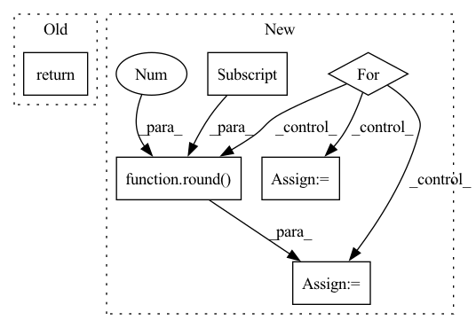

Pattern ID :27027
Before Change
// wandb.log({"Test Loss": test_avg_cost,
// "Pearson Loss": neg_cost,
// "STFT Loss": stft_cost}, step=epoch)
return test_avg_cost.__float__()
After Change
with tqdm(dataset, desc="Test{}".format(str(epoch)), total=len(dataset), leave=True) as test_epoch:
with torch.no_grad():
for idx, (X_test, Y_test, dia, sys, size_class) in enumerate(test_epoch):
hypothesis = model(X_test, scaler=scaler)
avg_cost_list, cost = tu.calc_losses(avg_cost_list, loss,
hypothesis, Y_test,
idx + 1)
total_cost = np.sum(avg_cost_list)
temp = {}
for i in range(len(loss)):
temp[(str(loss[i]))[:-2]] = (round(avg_cost_list[i] , 3 ))
test_epoch.set_postfix(losses=temp, tot=total_cost)
if plot_flag:
plot = plot_prediction(X_test[0], Y_test[0], [dia[0], sys[0], size_class[0]], hypothesis[0], epoch,
plot_target)
plot_flag = False
// wandb.init(project="VBPNet", entity="paperchae")In pattern: SUPERPATTERN
Frequency: 3
Non-data size: 6
Instances Fragment ID: 80449147
Project Name: tvs-ai/pytorch_rppgs
Commit Name: 79fa5ea2fc22ff76197fc5272382574b54608880
Time: 2023-01-02
Author: forownsake@gmail.com
File Name: vid2bp/test.py
M Class Name: AnonimousClass
N Class Name: AnonimousClass
M Method Name: test(6)
N Method Name: test(5)
M Parent Class:
N Parent Class:
M File Name: vid2bp/test.py
N File Name: vid2bp/test.py
M Start Line: 53
M End Line: 84
N Start Line: 61
N End Line: 91
Before Change
// wandb.log({"Valid Loss": valid_avg_cost,
// "Valid Pearson Loss": neg_cost,
// "STFT Loss": stft_cost}, step=epoch)
return valid_avg_cost.__float__()
After Change
with tqdm(dataset, desc="Validation{}".format(str(epoch)), total=len(dataset), leave=True) as valid_epoch:
with torch.no_grad():
for idx , (X_val, Y_val, dia, sys, size_class) in enumerate(valid_epoch):
hypothesis = model(X_val, scaler=scaler)
avg_cost_list, cost = tu.calc_losses(avg_cost_list, loss,
hypothesis, Y_val,
idx + 1)
total_cost = np.sum(avg_cost_list)
temp = {}
for i in range(len(loss)):
temp[(str(loss[i]))[:-2]] = (round(avg_cost_list[i] , 3 ))
valid_epoch.set_postfix(losses=temp, tot=total_cost)
// wandb.init(project="VBPNet", entity="paperchae")
// wandb.log({"Valid Loss": total_cost}, step=epoch) Fragment ID: 80449146
Project Name: tvs-ai/pytorch_rppgs
Commit Name: 79fa5ea2fc22ff76197fc5272382574b54608880
Time: 2023-01-02
Author: forownsake@gmail.com
File Name: vid2bp/validation.py
M Class Name: AnonimousClass
N Class Name: AnonimousClass
M Method Name: validation(5)
N Method Name: validation(5)
M Parent Class:
N Parent Class:
M File Name: vid2bp/validation.py
N File Name: vid2bp/validation.py
M Start Line: 29
M End Line: 58
N Start Line: 31
N End Line: 53
Before Change
// wandb.log({"Test Loss": test_avg_cost,
// "Pearson Loss": neg_cost,
// "STFT Loss": stft_cost}, step=epoch)
return test_avg_cost.__float__()
After Change
with tqdm(dataset, desc="Test{}".format(str(epoch)), total=len(dataset), leave=True) as test_epoch:
with torch.no_grad():
for idx , (X_test, Y_test, dia, sys, size_class) in enumerate(test_epoch):
hypothesis = model(X_test, scaler=scaler)
avg_cost_list, cost = tu.calc_losses(avg_cost_list, loss,
hypothesis, Y_test,
idx + 1)
total_cost = np.sum(avg_cost_list)
temp = {}
for i in range(len(loss)):
temp[(str(loss[i]))[:-2]] = (round(avg_cost_list[i] , 3 ))
test_epoch.set_postfix(losses=temp, tot=total_cost)
if plot_flag:
plot = plot_prediction(X_test[0], Y_test[0], [dia[0], sys[0], size_class[0]], hypothesis[0], epoch, Fragment ID: 80449139
Project Name: tvs-ai/pytorch_rppgs
Commit Name: 79fa5ea2fc22ff76197fc5272382574b54608880
Time: 2023-01-02
Author: forownsake@gmail.com
File Name: vid2bp/test.py
M Class Name: AnonimousClass
N Class Name: AnonimousClass
M Method Name: test(6)
N Method Name: test(5)
M Parent Class:
N Parent Class:
M File Name: vid2bp/test.py
N File Name: vid2bp/test.py
M Start Line: 53
M End Line: 84
N Start Line: 61
N End Line: 91
Before Change
// get topk
_, topk_index = torch.topk(scores_matrix, max(self.topk), dim=-1) // nusers x k
return topk_index
def collect(self, batch_matrix_list, eval_data):
calculate the metrics of all batchesAfter Change
metric_dict = {}
result_list = self._calculate_metrics(pos_len_list, topk_index)
for metric, value in zip(self.metrics, result_list):
for k in self.topk:
key = "{}@{}".format(metric, k)
metric_dict[key] = round(value[k - 1] , 4 )
return metric_dict
def _check_args(self):
Fragment ID: 80449143
Project Name: rucaibox/recbole
Commit Name: df66b6285fec567d1f3ca0d6ee9d9ceb71f792b6
Time: 2020-10-20
Author: 1337990880@qq.com
File Name: recbole/evaluator/topk_evaluator.py
M Class Name: TopKEvaluator
N Class Name: TopKEvaluator
M Method Name: evaluate(3)
N Method Name: evaluate(4)
M Parent Class: AbstractEvaluator
N Parent Class: AbstractEvaluator
M File Name: recbole/evaluator/topk_evaluator.py
N File Name: recbole/evaluator/topk_evaluator.py
M Start Line: 38
M End Line: 57
N Start Line: 69
N End Line: 80